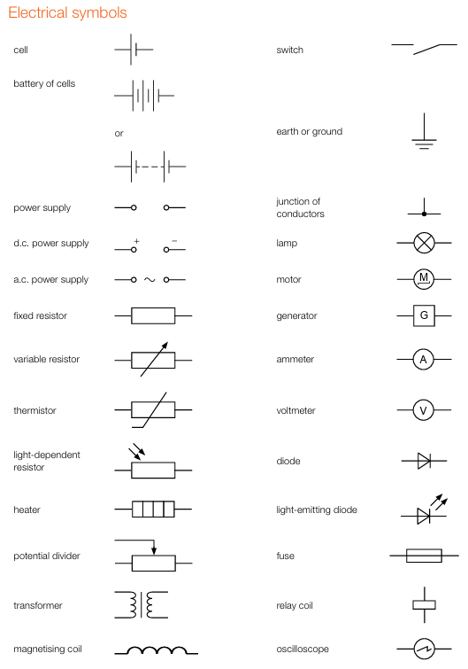
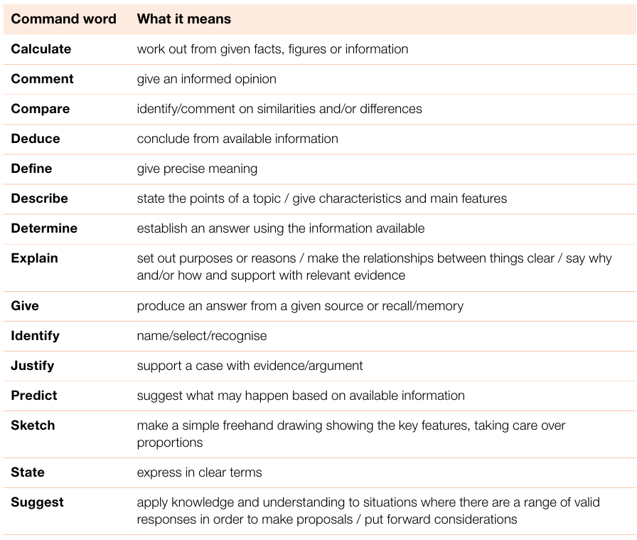
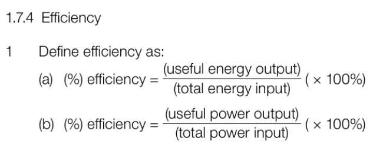
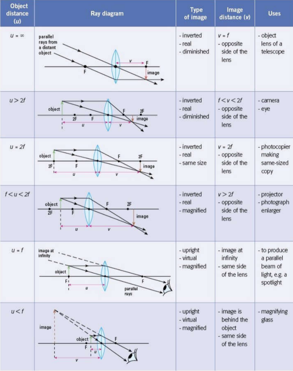
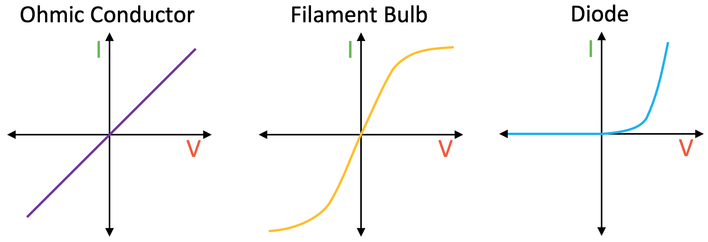
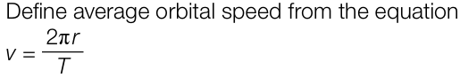
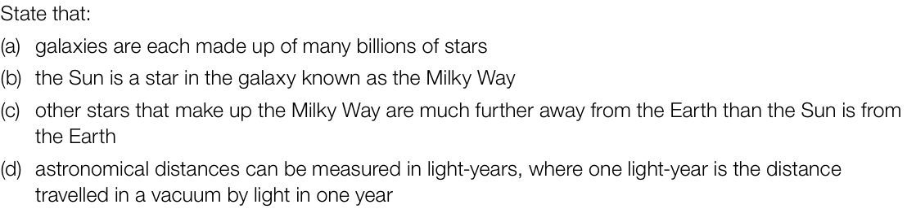
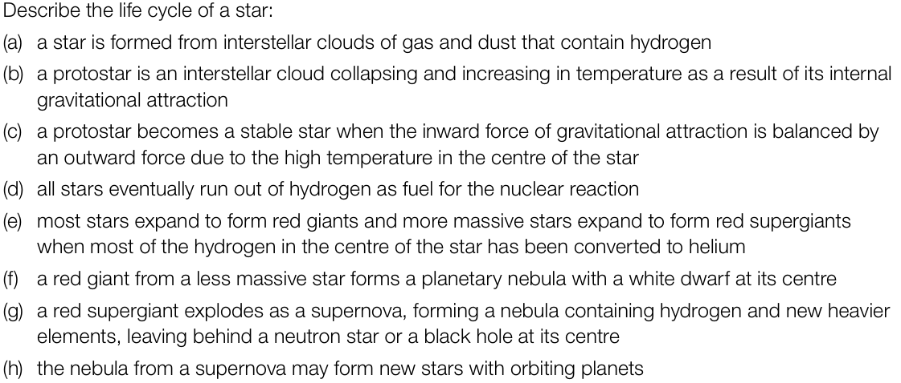
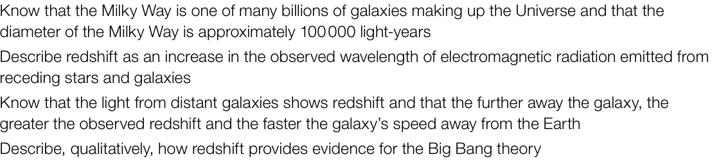

Error List and Notes
Links
Physics
Practical
- General Planning Structure
- Mention independent and dependent variable
- Mention control variable
- Describe the method
- Measure BOTH independent and dependent variables
- Mention additional apparatus
- Mention any readings and the instrument used to take reading
- Repeat each reading and take average
- Draw a table using all the measurements and their units used
- No value actually needs to be written
- Draw a y vs x graph/bar chart/histogram/etc
- Predict
- Any errors will involve Control Variables unable to be kept constant
- Important Notes by Cambridge
- Use ∆ (delta) in algebraic expressions and equations to represent a change in a variable
- Data values should be read from an instrument to an accuracy of one half of one of the smallest divisions on the scale. Interpolation between scale divisions should be to an accuracy of one half of a division. That is, where a reading lies between two scale marks, it should be interpolated to the nearest half division.
- A ratio should be expressed as x : y.
- Unless instructed otherwise, the scales for the axes should allow more than half of the graph grid to be used in both directions, and be based on sensible ratios, e.g. 2 cm on the graph grid representing 1, 2 or 5 units of the variable (or 10, 20 or 50, etc.)
- When the gradient or intercept of a graph is used in subsequent calculations, it will be assumed to have units consistent with the graph axes.
- Comment on and explain whether results are equal within the limits of experimental accuracy (assumed to be ± 10% at this level of study)
- Identify sources of error, including measurement error, random error and systematic error
- Random error causes measurements to vary randomly around the true value, sometimes higher and sometimes lower
- Random error has some accuracy, but the values are not precise
- Systematic error causes measurements to be consistently too high or too low by a fixed amount or proportion
- The values are precise but not accurate
- Accuracy - a measurement result is described as accurate if it is close to the true value
- Precision - how close the measured values of a quantity are to each other
- How to find the centre of mass
- Place two set squares on either side of the object and take the reading where the set squares touch the object from the metre rule. Calculate the average of the readings to find the centre of mass
- Possible Precautions to take
- Avoid Parallax Errors (Avoid writing if possible)
- Look at the scales perpendicularly or at right angles
- Ensure a metre rule is straight
- Ensure the metre rule is vertical using a set square with the point at the bottom of the horizontal rule
- Ensure the metre rule is horizontal by measuring the height of the rule above the bench in at least two different places and if the measurements were equal the rule is horizontal.
- Reduces the effect of reaction time errors
- Reduces the effect of random errors
- More accurate values
- More precise values
- Possible Sources of Errors And Prevention
- The Pivot may shift from the centre of the mass
- The masses may slide from their positions
- An object may not have uniform cross sectional area or thickness
- The metre rule may not be uniform
- The instrument may not be accurate enough
- Same volume/size/shape of a block
- Same mass of a block
- Start stopwatches at the same time
- Time intervals for readings should be constant
- Distance should be kept same
- Same number of objects
- Same material
- Same diameter
- Possible Precautions to take
- Avoid Parallax Errors (Avoid writing if possible)
- Look at the scales perpendicularly or at right angles
- Look at the lower meniscus of water levels
- View readings at eye level
- Wait 30s before taking temperature readings
- This is to ensure the maximum temperature is reached
- To ensure the temperature has stopped rising
- To allow the liquid to expand or thermometer to adjust to conditions
- Ensure thermometer is vertical
- Stir the water continuously to ensure the water has uniform temperature
- Good option for water experiments
- Thermometer should not touch the sides of the beaker
- Possible Sources of Errors And Prevention
- If the lid is not covered, evaporation may occur, causing differences in heat loss
- Cover both containers with a lid
- Two different containers may have different surface areas
- Use containers of the same surface area
- Container walls may have different thickness
- Use containers with walls of the same thickness
- Initial temperature
- Thermometer position (Always at same depth)
- Experiment should be carried out in the same room with same environmental conditions
- Blocks should be heated in the same way (such as heating for the same duration of time)
- Change in temperature should be kept same
- Possible Precautions to take
- Avoid Parallax Errors (Avoid writing if possible)
- Look at the scales perpendicularly or at right angles
- Perform experiment in a dark room
- Use protractor to ensure angles are accurate so that the reflected line is as accurate as possible
- Pins should not be close together to ensure accurate reflected lines
- Move the lens back and forth until a clear image is seen on the screen (Approach formation of image from both directions)
- For bigger/smaller images move the lens until the image is bigger/smaller than the lens. Then move the lens back and forth. Ensure object, lens and screen are perpendicular to the metre rule
- Possible Sources of Errors And Prevention
- The lines may be too thick (refractive index drawing experiment)
- A sharp pencil should be used
- The pins may not be vertical (refractive index drawing experiment)
- Light rays may be too thick so difficult to place crosses or marks
- Difficult to see image clearly
- Conduct image in dark room
- Lens thickness should be measured using a more precise instrument such as vernier caliper or micrometre
- Possible Precautions to take
- Turn off the switch to prevent overheating of wire or battery/cells running down
- Possible Sources of Errors And Prevention
- Connection between wire and crocodile clips may be loose/not precise
- The battery may be running low
- Difficult to position load on the scale of the metre rule at the correct distance from the pivot
- Hang the weight using a loop


Motion, forces and energy
- Important Notes by Cambridge
- 1.1 Physical quantities and measurement techniques
- Know that the following quantities are scalars: distance, speed, time, mass, energy and temperature
- Know that the following quantities are vectors: displacement, force, weight, velocity, acceleration, momentum, electric field strength and gravitational field strength
- State that a force may change the velocity of an object by changing its direction of motion or its speed
- State Newton’s first law as ‘an object either remains at rest or continues to move in a straight line at constant speed unless acted on by a resultant force’
- State Newton’s third law as ‘when object A exerts a force on object B, then object B exerts an equal and opposite force on object A’
- Explain the factors that affect thinking and braking distance including speed, tiredness, alcohol, drugs, load, tyre surface and road conditions
- Describe, qualitatively, motion in a circular path due to a force perpendicular to the motion as:
- (a) speed increases if force increases, with mass and radius constant
- (b) radius decreases if force increases, with mass and speed constant
- (c) an increased mass requires an increased force to keep speed and radius constant
- 1.7 Energy, work and power
- State that energy may be stored as kinetic, gravitational potential, chemical, elastic (strain), nuclear, electrostatic and internal (thermal)
- Describe how energy is transferred between stores during events and processes, including examples of transfer by forces (mechanical work done), electrical currents (electrical work done), heating, and by electromagnetic, sound and other waves
- Describe advantages and disadvantages of each method of how useful energy may be obtained, limited to whether it is renewable, when and whether it is available, and its impact on the environment
- State that the pressure at a surface produces a force in a direction at right angles
- Define speed as distance travelled per unit time and define velocity as change in displacement per unit time
- Define acceleration as change in velocity per unit time; recall and use the equation
- Know that a deceleration is a negative acceleration
- State that mass is a measure of the quantity of matter in an object at rest relative to the observer
- State that the mass of an object resists change from its state of rest or motion which is called inertia
- State that a gravitational field is a region in which a mass experiences a force due to gravitational attraction
- Define gravitational field strength as force per unit mass
- Define density as mass per unit volume; recall and use the equation
- Describe friction as a force that may impede motion and produce heating
- Elastic deformation is seen when forces produce a change in size and shape of an object
- Describe the moment of a force as a measure of its turning effect
- Define momentum as mass × velocity
- Define impulse as force × time for which force acts
- Define resultant force as the change in momentum per unit time
- 1.7 Energy, work and power

- Define power as work done per unit time and also as energy transferred per unit time
- Define pressure as force per unit area
- For an object to be in equilibrium, their vector forces must form a closed triangle
- For a heavier object air resistance is a smaller proportion to weight so resultant force is greater so acceleration is greater.
- Use equation of motion when finding displacement using initial and final velocity
- Circular Motion and Turning effect of force
- When a pivot is involved, and a weight is present to balance it, using law of moments to determine centre of mass location, not using the base
- When finding the centre of mass using a lamina, we must wait for the lamina to become stationary before attaching the plumb line.
- When the centre of mass falls outside the base the weight creates a moment which causes the object to fall while rotating.
- A wider base makes an object more stable as the centre of mass gets lowered and the centre of mass would still be inside the base for the same amount of force.
- If the mass is not halfway along the length of an object, that means the mass is not evenly distributed
- Resultant force is specifically the rate of increase of momentum, not just change in momentum
Thermal physics
- Important Notes by Cambridge
- 2.3 Transfer of thermal energy
- Describe thermal conduction in all solids in terms of atomic or molecular lattice vibrations and also in terms of the movement of free (delocalised) electrons in metallic conductors
- 2.2 Thermal properties and temperature
- Define specific heat capacity as the energy required per unit mass per unit temperature increase; recall and use the equation
- Describe latent heat as the energy required to change the state of a substance without a change in temperature
- Thermal properties and temperature
- Evaporation causes cooling as the fast moving more energetic particles escape from the surface leaving slow moving less energetic particles behind, so the average KE decreases.
Waves
- Important Notes by Cambridge
- 3.3 Electromagnetic spectrum
- State the approximate range of frequencies audible to humans as 20 Hz to 20,000 Hz
- Amplitude - Loudness, Frequency - Pitch
- Know that the speed of sound in air is approximately 330–350 m / s
- Know that, in general, sound travels faster in solids than in liquids and faster in liquids than in gases
- Describe the uses of ultrasound in cleaning, prenatal and other medical scanning, and in sonar
- 3.1 General properties of waves
- Frequency is the number of wavelengths that pass a point per unit time
- Wavelength is the distance between two consecutive, identical points such as two consecutive crests
- Amplitude as the maximum distance from the mean position or rest
- Know that for a transverse wave, the direction of vibration is at right angles to the direction of the energy transfer
- Know that for a longitudinal wave, the direction of vibration is parallel to the direction of the energy transfer
- Describe an echo as the reflection of sound waves
- Define ultrasound as sound with a frequency higher than 20 kHz

- The X-rays are directed towards the body part with the (suspected) broken bone. X-rays pass through flesh but not to the same extent through bone. A digital detector is present behind the bone which produces an image of the bones as X-rays are detected photographically. Hence, bones show up in the less exposed part of the photographic film. The detection reveals bone breaks.
- Compression is when air vibrates forward. Rarefaction is when air vibrates backward.
Electricity and Magnetism
- Important Notes by Cambridge
- 4.2 Electrical quantities
- Explain that charging of solids by friction involves only a transfer of negative charge (electrons)
- State that conventional current is from positive to negative and that the flow of free electrons is from negative to positive
- State that the direction of an electric field line at a point is the direction of the force on a positive charge at that point
- 4.4 Practical electricity
- State common uses of electricity, including heating, lighting, battery charging and powering motors and electronic systems
- (Details of calling bell is most likely not needed)
- A sensitive thermometer is a thermometer where the quantity changes a lot per unit temperature rise
- The steam point is the temperature of boiling water
- The ice point is the temperature of freezing water or melting ice
- 4.1 Simple magnetism and magnetic fields
- Describe a magnetic field as a region in which a magnetic pole experiences a force
- 4.2 Electrical quantities
- Define electric current as the charge passing a point per unit time; recall and use the equation
- Define e.m.f. (electromotive force) as the electrical work done by a source in moving a unit charge around a complete circuit. It is work done per unit charge
- Define p.d. (potential difference) as the work done by a unit charge passing through a component. It is work done per unit charge
- 4.4 Practical electricity
- Define the kilowatt-hour (kW h) and calculate the cost of using electrical appliances where the energy unit is the kW h
- A kilowatt hour is defined as one kilowatt of energy used by a device in one hour
- 4.5 Electromagnetic effects
- State and use the fact that the effect of the current produced by an induced e.m.f. is to oppose the change producing it (Lenz’s law)
- Know that a current-carrying coil in a magnetic field may experience a turning effect and that the turning effect and this is motor effect
- The reason there is no current or reading on ammeter when diode direction and current direction is opposite is because diode has extremely high resistance
- In parallel, if the resistance of a component in a branch changes, only other components in the branch will have different current. Components in other branches will still have the same current.
- Connecting a filament lamp to a power supply of lower voltage causes the resistance of filament lamp to drop as the filament is cooler
- On cold mornings, the circuit may have greater current as the resistance is lower
- If a component has double insulation then that component does not need to be earthed.
- If you place the fuse in the earth wire, then the fuse will still melt and the lamp will appear off, but the metal casing will still be live.
- Why should we place the fuse in the live wire?
- To disconnect voltage supply from the circuit [1]
- Placing the fuse in the live wire is to ensure that no part of the device/no component is live and that the live wire is not connected to any components. When the fuse melts, the voltage source will become disconnected from the circuit. [3]
- Filament lamp has low efficiency as a lot of energy is wasted as heat
- If the temperature across a thermistor increases then the reading on the voltmeter decreases as the voltage decreases. The resistance decreases so more current flows through the thermistor. This causes the voltage of other components to increase and so, voltage of the thermistor decreases.
- Current–voltage graphs for a resistor of constant resistance, a filament lamp and a diode

- When earth wire is connected, electrons move into earth, causing top half of sphere to be positively charged and bottom to be neutral (if negative rod is brought close)
- When earth wire is disconnected, positive charges repel each other causing uniform spread of positive charge over the surface of the sphere
- Air is an insulator which prevents electrons from being transferred between two objects. This allows objects to remain charged by static electricity for a long time
- A filament lamp blows very often after being switched on as, in low temperature, it has low resistance, so current surge causes it to blow
- The relay switch uses an electromagnet. In relay switch a secondary circuit is used to operate the primary circuit for safety when handling industrial machinery which use high voltage (This line sometimes not necessary). When the switch in the secondary circuit is closed, the coil in the secondary circuit becomes an electromagnet due to current flowing through it and attracts an iron armature, which moves towards the electromagnet. Due to the movement of the iron armature, the contacts in the primary circuit get closed and the primary circuit is activated. When we open the switch in the secondary circuit, the coil stops being an electromagnet which causes the iron armature to move to its initial position and a gap is created in the contacts which causes the primary circuit to not be closed. (Or you can just simply say when we switch off the secondary circuit, primary circuit is also switched off)
- Fields around two current carrying conductors
Nuclear physics
- Important Notes by Cambridge
- 5.1 The nuclear model of the atom
- Describe how alpha-particle scattering experiments provide evidence for:
- (a) a very small nucleus surrounded by mostly empty space
- (b) a nucleus containing most of the mass of the atom
- (c) a nucleus that is positively charged
- Describe the detection of alpha particles (α-particles) using a cloud chamber or spark counter and the detection of beta particles (β-particles) (β-particles will be taken to refer to β−) and gamma radiation (γ-radiation) by using a Geiger-Müller tube and counter
- Know the sources that make a significant contribution to background radiation including:
- (a) radon gas (in the air)
- (b) rocks and buildings
- (c) food and drink
- (d) cosmic rays
- Explain the action of coolant, moderators and control rods in a reactor
- Explain how the type of radiation emitted and the half-life of the isotope determine which isotope is used for applications including:
- (a) household fire (smoke) alarms
- (b) irradiating food to kill bacteria
- (c) sterilisation of equipment using gamma rays
- (d) measuring and controlling thicknesses of materials with the choice of radiations used linked to penetration and absorption
- (e) diagnosis and treatment of cancer using gamma rays
- Explain how radioactive materials are moved, used and stored in a safe way, with reference to:
- (a) reducing exposure time
- (b) increasing distance between source and living tissue
- (c) use of shielding to absorb radiation
- 5.1 The nuclear model of the atom
- Define the terms proton number (atomic number) Z and nucleon number (mass number) A and be able to calculate the number of neutrons in a nucleus
- Know that radioactive decay is a change in an unstable nucleus that can result in the emission of α-particles or β-particles and/or γ-radiation and know that these changes are spontaneous and random
- Describe the process of fusion as the formation of a larger nucleus by combining two smaller nuclei with the release of energy, and recognise fusion as the energy source for stars
- Describe the process of fission when a nucleus, such as uranium-235 (U-235), absorbs a neutron and produces daughter nuclei and two or more neutrons with the release of energy
- Define the half-life of a particular isotope as the time taken for half the nuclei of that isotope in any sample to decay
- Alpha particles can only travel a few cm in air as they are absorbed by air
- During fission when the nucleus splits, 3 fast moving highly energetic neutrons are released. Graphite moderators are used to slow down the neutrons so that they can bombard against other uranium nuclei and be absorbed into the nucleus. The uranium nucleus now has an extra nucleus and also splits and releases neutrons. Thus a chain reaction is formed in which the released neutrons cause the process to continue. Control rods can be used to control the rate of reaction by absorbing excess neutrons. The walls of the reactor are made up of concrete (as lead is too expensive) to ensure no harmful radiation escapes the reactor (radiation shielding) and to physically contain the reaction. The energy is released as heat from fission, which is used to evaporate water into steam. The steam is then used to power a turbine from which electricity can be generated. A condenser is also present to convert the steam back into water so it can be re-used.
Space physics
- Important Notes by Cambridge
- 6.1 Earth and the Solar System
- (a) the Earth is a planet that orbits the Sun once in approximately 365 days
- (b) the orbit of the Earth around the Sun is an ellipse which is approximately circular
- (c) the Earth rotates on its axis, which is tilted, once in approximately 24 hours
- (d) it takes approximately one month for the Moon to orbit the Earth
- (e) it takes approximately 500 s for light from the Sun to reach the Earth

- Describe the Solar System as containing:
- (a) one star, the Sun
- (b) the eight named planets and know their order from the Sun
- (c) minor planets that orbit the Sun, including dwarf planets such as Pluto and asteroids in the asteroid belt
- (d) moons, that orbit the planets
- (e) smaller Solar System bodies, including comets and natural satellites
- Know that the strength of the gravitational field:
- (a) at the surface of a planet depends on the mass of the planet
- (b) around a planet decreases as the distance from the planet increases
- Know that the Sun contains most of the mass of the Solar System and that the strength of the gravitational field at the surface of the Sun is greater than the strength of the gravitational field at the surface of the planets
- Know that the force that keeps an object in orbit around the Sun is the gravitational attraction of the Sun
- Know that the strength of the Sun’s gravitational field decreases and that the orbital speeds of the planets decrease as the distance from the Sun increases
- 6.2 Stars and the Universe



- When a protostar collapses, gravitational potential energy is converted into internal energy. Some GPE also turns into KE.
- Gravitational attraction or gravitational force is the force, not gravity
- In stars, nuclear fusion produces high temperature, and this high temperature is responsible for radiation pressure or outward force
- Planets closer to the sun take less time to complete one orbit as orbital speed is greater due to smaller circumference of orbit.
- A moon is a large, natural object that orbits planets as a natural satellite
- The further the Earth is from the sun, the less its KE as its GPE is greater